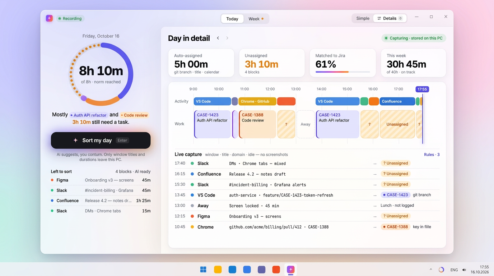
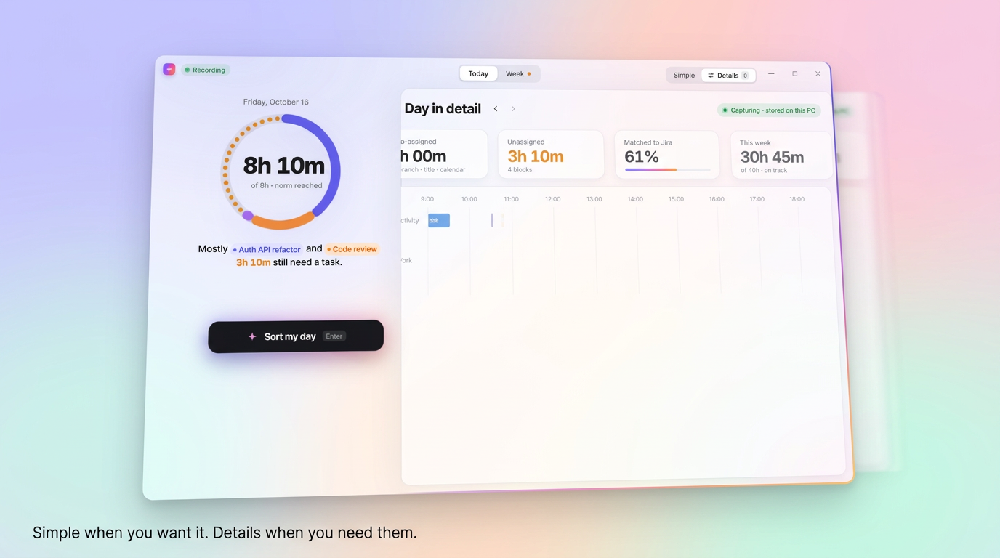

Обычный режим — D · One Button.
Детали — A · Aurora Glass.
Четыре способа смешать два направления. В обычном режиме кольцо нормы, одна фраза и одна кнопка. В режиме деталей стеклянный дашборд: KPI, лента Activity/Work, живой захват и AI-панель. Главное здесь — переход между режимами. Он должен выглядеть волшебно и при этом честно собираться на WinUI 3 (ConnectedAnimation и Composition).
H1 · Morph одно окно, один переключатель
H1 · Morph
Большое кольцо D сжимается и по дуге улетает в hero-плитку KPI. «8h 10m» выезжает из кольца в значение плитки. Оранжевое «3h 10m» из фразы перелетает в AI-панель. Чёрная кнопка «Sort my day» превращается в градиентную. Следом появляются rail, плитки, лента и живой захват, а по краю окна пробегает радужный ободок.
Плюсы
- Самый «магический» переход: пять элементов летят одновременно и складываются в дашборд.
- Детали — это полный экран A: совпадает с роликом и будущими скриншотами Store.
- Одна метафора: кольцо в трее, в простом экране и в плитке.
Минусы
- По сути это две разные страницы. Пользователь теряет «якорь», когда кольцо уезжает в угол.
- Хореографию из пяти общих элементов придётся настраивать вручную.
- Rail появляется только в деталях, поэтому навигация в двух режимах разная.
WinUI 3
- Две сетки на одной странице или два
PageвFrame.ConnectedAnimationService.PrepareToAnimate("ring"), затемTryStart(heroRing, new[]{ totalText, normText }). - Дуга полёта:
GravityConnectedAnimationConfiguration. Для «Back» —DirectConnectedAnimationConfiguration. - Каскад появления:
ElementCompositionPreview.SetImplicitShowAnimation(Opacity + Offset + Scale) сDelayTimeпо индексу. - Ободок:
CompositionLinearGradientBrush+CompositionMaskBrush(NineGrid) с анимированнымRotationAngle.
H2 · Sheet → dashboard шторка D становится стеклянной панелью A
H2 · Sheet → dashboard
Шторка «Details» внизу экрана D вытягивается вверх и раскрывается в стеклянную панель на всё окно. Простой экран уходит назад, уменьшается и размывается, как карточки в iOS. Полоса дня из шторки разрастается в дорожку Work на таймлайне. Кольцо и «8h 10m» садятся в шапку панели. Контент едет вместе со шторкой и обрезается по её краю.
Плюсы
- Метафора понятна без объяснений: «потяни, чтобы увидеть больше».
- Переход можно делать жестом: шторка идёт за пальцем или мышью и прерывается в любой момент.
- Полоса дня видна уже в простом режиме, детали не спрятаны совсем.
Минусы
- На десктопе жест «потянуть шторку» непривычен. Мышью его чаще кликают, чем тянут.
- Шторка занимает около 90 px внизу простого экрана.
- Rail нет: навигация Tasks/Rules уходит в меню.
- Больше всего своего кода: жест, обрезка, параллакс.
WinUI 3
InteractionTracker+VisualInteractionSourceдают перетаскивание, инерцию и точки привязки (peek / full).- Позицию,
InsetClipшторки и масштаб и прозрачность простого экрана связывает однаExpressionAnimationотtracker.Position.Y, так что всё синхронно и не нагружает UI-поток. - Полоса превращается в дорожку через
ConnectedAnimationсоScale. - Размытие фона через
GaussianBlurEffect(Win2D effect graph) затратно. Можно обойтись без него: хватит scale и dim.
H3 · Widget → window компактное окно у трея вырастает в полное
H3 · Widget → window
В простом режиме приложение — виджет 420×660 над часами: кольцо, фраза и кнопка, а на вкладке Week — итог недели и «Confirm». По «Expand» окно растёт из угла в полный дашборд 1280×800. Рамка окна постепенно открывает раскладку A, а кольцо, число и кнопка летят на свои места.
Плюсы
- Простой режим реально маленький: его можно держать открытым рядом с работой как виджет.
- Трей-флайаут и компактное окно — одно и то же.
- Неделя в компактном окне умещается целиком, вместе с вопросом и кнопкой.
Минусы
- Окно, которое само меняет размер и позицию, может раздражать, особенно на нескольких мониторах и с другой позицией таскбара.
- Плавно анимировать Win32-окно трудно: Mica и Acrylic перерисовываются каждый кадр, бывают рывки.
- По сути две полные раскладки плюс логика позиции окна.
WinUI 3
AppWindow.MoveAndResize(RectInt32)на каждом тикеCompositionTarget.Rendering— честный, но рискованный путь (60 Гц не гарантированы).- Надёжнее трюк: сразу поставить финальный rect, а контент (корневой
Visual) масштабировать от старого rect к 1 черезScale,OffsetиClip. Окно меняется один раз, анимация полностью в Composition. DisplayArea.GetFromWindowId(...).WorkAreaдаёт угол у трея. Для виджета:OverlappedPresenter.IsAlwaysOnTopиIsResizable=false.
H4 · Two-pane рекомендуем колонка D остаётся всегда, детали A выезжают справа
H4 · Two-pane рекомендуем
В простом режиме колонка D занимает всё окно. По «Details» она сужается до 380 px: дата, кольцо, фраза и кнопка плавно переезжают влево и уменьшаются, но сохраняют смысл. Справа выезжает стеклянная панель A: KPI, таймлайн и живой захват. На неделе слева итог, кольца дней, вопрос и «Confirm», справа ворклоги с процентом AI.
Плюсы
- Главная кнопка и кольцо всегда на месте. Детали только добавляют контекст и ничего не прячут.
- Одна страница вместо двух. Переход — это изменение раскладки, а не смена экрана.
- Адаптивность бесплатно: узкое окно — простой режим (это H3), широкое — две панели.
- Колонка = трей-флайаут = виджет: один компонент на три места.
Минусы
- Переход скромнее H1: элементы переезжают, а не превращаются.
- Правая панель на ~300 px уже, чем у A. Живой захват и таймлайн помещаются, а отдельной AI-панели нет: её роль играет колонка.
- На скриншоте Store это две колонки, а не «плотный дашборд» из ролика.
WinUI 3
Gridс двумя колонками. Ширину левой иVisual.Offset.Xправой анимирует Composition, панель обрезаетсяInsetClip, который едет вместе с ней.- Переезд кольца, фразы и кнопки — неявные анимации:
visual.ImplicitAnimations["Offset"]и["Scale"](свойстваTranslationиScaleнаUIElement). Layout сам считает новые позиции, а Composition плавно их доигрывает. VisualStateManager:AdaptiveTrigger MinWindowWidth=1000переключает на две панели, кнопка «Details» ставит то же состояние явно.- Можно взять
SplitView(Inline, PanePlacement=Right), но его анимация слишком простая, лучше своя.
 Simple · Week
Simple · Week


Переход недели в H4 (общие итог, кольца дней и «Confirm»): previews/h4-week.mp4. В каждом прототипе на вкладке Week работает тот же переключатель.
Сравнение
| Критерий (1–5) | H1 · Morph | H2 · Sheet | H3 · Widget | H4 · Two-pane |
|---|---|---|---|---|
| Вау-переход | 5 | 4 | 5 | 4 |
| Простой режим остаётся простым (D) | 5 | 5 | 4 | 5 |
| Полнота деталей (A) | 5 | 4 | 5 | 4 |
| Не теряется контекст при переключении | 3 | 4 | 3 | 5 |
| Нативность WinUI 3 / низкий риск | 3 | 3 | 2 | 5 |
| Совпадение с промо-роликом и Store | 5 | 4 | 4 | 4 |
| Объём | M–L · 2–2.5 нед. | L · 2.5–3 нед. | L · ~3 нед. + риск | M · 1.5–2 нед. |
| Сумма | 26 | 24 | 23 | 27 |
Концепты · Nano Banana gemini-3-pro-image, на основе скриншотов H4
Концепт задаёт настроение и не является спецификацией: мелкий текст модель местами искажает. Источник правды — HTML-прототипы.




Как это собрать в WinUI 3 общее для всех гибридов
Механика прототипов = модель реализации
- В прототипе один параметр
p ∈ [0,1]управляет всем переходом. Это прямой аналогExpressionAnimationот одногоCompositionPropertySet: в Composition им тоже удобно рулить из одного места и отменять на полпути. - «Общие элементы» (кольцо, итог, CTA, фраза) работают как
ConnectedAnimation: снимок старого элемента летит в rect нового и перекрёстно растворяется. - Появление по каскаду реализуется через
SetImplicitShowAnimation/SetImplicitHideAnimationсDelayTime = i × 30–45 ms. - Кривая полёта:
cubic-bezier(.6,0,.12,1.12), то есть медленный старт и ~4% перелёта. В Composition —CubicBezierEasingFunctionилиSpringVector3NaturalMotionAnimation(DampingRatio ≈ 0.75).
Детали и бюджеты
- Длительность 1.25–1.4 с вперёд, назад ×0.85. Для повседневного использования стоит дать настройку «Reduce motion» (
UISettings.AnimationsEnabled) и в этом режиме делать crossfade за 150 ms. - Кольцо:
Path/ArcSegmentна задачу, точки неразобранного времени черезItemsRepeaterпо окружности или Win2D. Тот же генератор рисует иконку трея (H.NotifyIcon). - Радужный ободок и блик на время перехода:
SpriteVisualс градиентом и маской. Это декор, его можно отключить на слабых ПК. - Стекло:
DesktopAcrylicBackdrop/MicaAlt+ полупрозрачныеBorder+ThemeShadow. Без Acrylic пастельный фон рисуетCompositionRadialGradientBrush. - Шрифты Inter и JetBrains Mono вшить в пакет.
Итог
Берём H4 · Two-pane и добавляем лучшее из остальных
- Каркас — H4. Колонка D (кольцо, одна фраза, одна кнопка) есть всегда. «Details» открывает справа панель A. Одна страница, никаких «двух приложений», риск в WinUI минимальный, около 1.5–2 недель.
- Компактный режим H3 без лишнего кода. Если окно уже ~1000 px, правая панель скрывается (
AdaptiveTrigger). Так та же колонка работает как виджет у трея и как трей-флайаут. Анимировать размер окна не нужно. - Момент из H1 для маркетинга. В Store-ролике и на лендинге переход снимаем по сценарию H1: кольцо улетает в hero-плитку, CTA превращается в градиентную кнопку. В продукте его можно включить как первый показ деталей (онбординг), если H4 покажется слишком тихим.
- Из H2 только полосу дня. Мини-таймлайн под кнопкой в простом режиме (в H4 это строка «9 blocks · 6 apps · 45m away») хорошо подсказывает, что за ним есть детали.
Отвергаем: H3 как основной режим (окно, которое само двигается и растёт, рискованно и спорно для UX) и H2 (жест «потяни шторку» на десктопе неочевиден и стоит дороже всех).